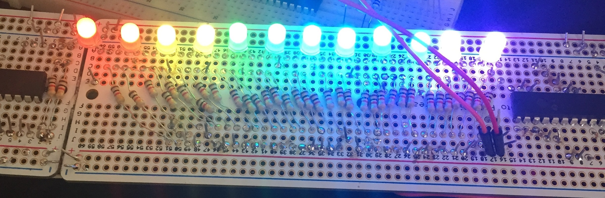
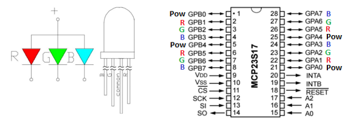
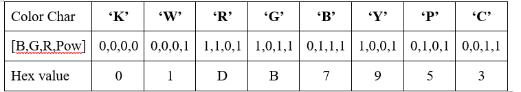
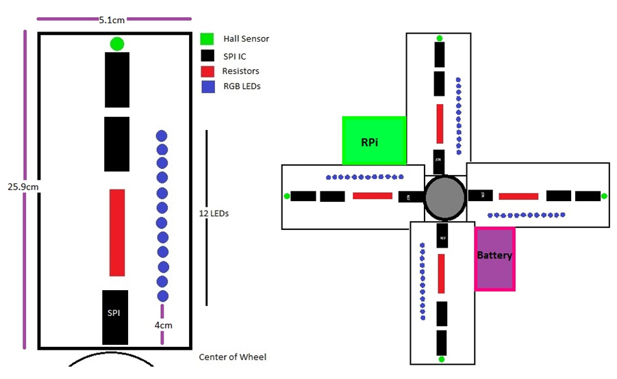
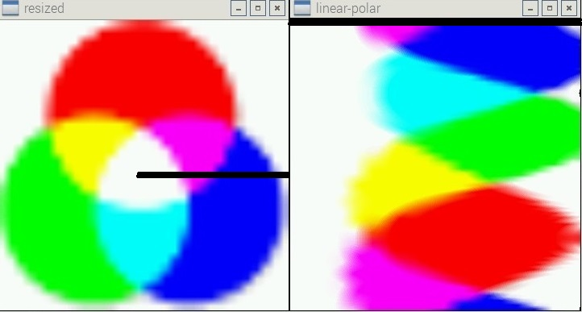
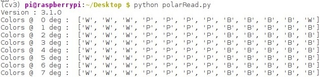
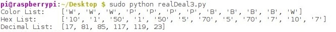
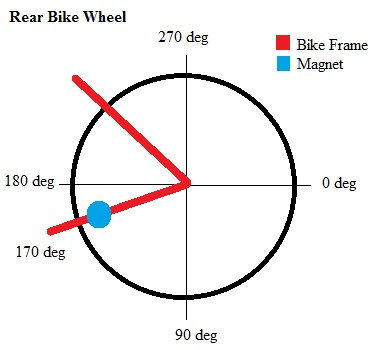
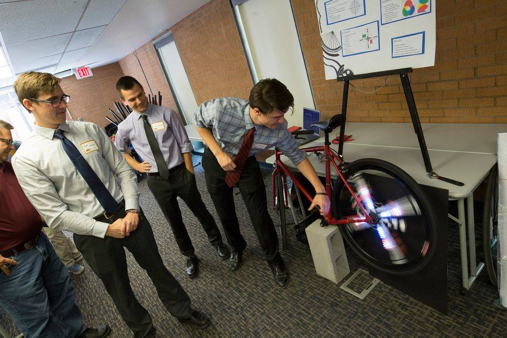
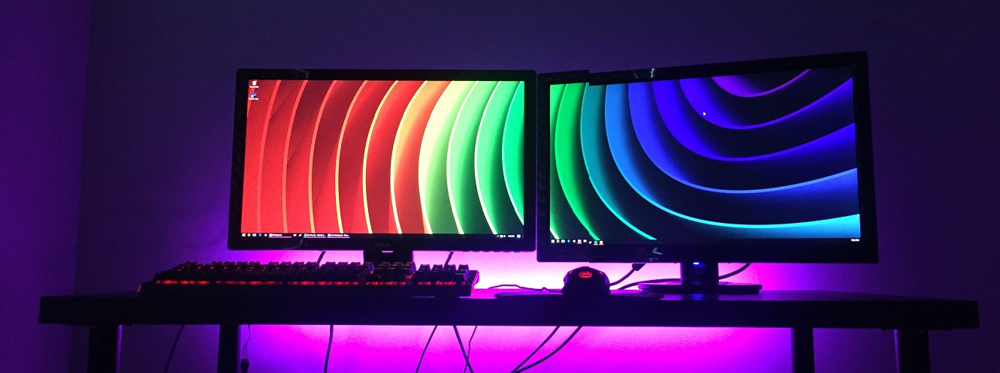

LED Bike Wheel
Living in Tempe (one of the most bikeable cities in the US) we encountered many bikes in our daily lives. It was how my teamates and I commuted to campus and back everyday of the week. Bikes, being so central to our environment, were at the forefront of our thoughts when it came time to pick a project topic in the Fall of 2015. We had all seen people attempt to put lights on their bikes, but most were just sad strands of LEDs that went about, producing nothing but a wiggly circle. We wanted take that idea and kick it up a notch. We envisioned making a bike wheel able to produce a vibrant picture of the user's choosing and display it as the bike traveled foward.
Senior Design Project
The LED Bike wheel was my senior design project (capstone) from my undergrad studies at Arizona State University. My team and I came up with the idea and later found out that other products like it already exist. Even still, our design offered some novel benefits, such as, on board image processing and WiFi connectivity.
Related Projects
1: Persistence Of Vision

Thus, the idea was born that there could be static images displayed on the bike wheel as the bike was in motion using the physical phenomenon of Persistence of Vision. Persistence of Vision is the explanation of how the human eye to retains a discrete image of light for fractions of a second after it has gone. “Whenever light strikes the retina, the brain retains the impression of that light for about a tenth of a second…after the source of the light is removed. As a result, the eye cannot clearly distinguish fast changes in light that occur faster than this retention period”. This phenomenon has inspired the creation of many technologies. It is at the core of how motion is perceived by us in movies or on television screens. The LED Bike Wheel would be able to utilize the sluggishness of the human eye and mind to not only create animation (using multiple frames in succession) but also to create the screen itself. In the assembly there would exists only a few pixels, but when spinning around at a fast enough rate, each pixel is perceived by the mind as a solid circle. The color of any point on those circles can be controlled to produce the desired image. An illustration of POV as it relates to our bike display is shown below.
Each blue circle represents what our minds would see from a single lit LED, rotating rapidly about the center. It is clear to see where in the rotation each LED would need to turn red in order to create the image of the red square, and it is the goal of this project to design a system to do something similar.
2: Final Prototype

Here I thought I would show what the final prototype actually looked like because if it wasn't clear how Persistence of Vision played a role, it should certainly be clear now.
The LED Bike Wheel is attempting to replicate an image of a banana in this video and you can see that the LEDs are only turning on at very specific locations during the rotation in order to create the banana. Multiple images could be played one after the other in order to produce an animation. To demonstrate this on the bike wheel we had 2 pac-man images one with mouth open and the next with mouth closed. Therefore, when you were riding the bike it would appear that pac-man was openning and closing his mouth.
Because we only had 12 LEDs on each board it limited the ability to produce complex images and shapes. Effectivley, it would be the same as having a really low resolution screen; thus, most of the images that we put on the bike wheel were quite simple.
Nevertheless, in subsequent posts I will describe (in detail) the design process of making this project and my thought process in solving the vaious challenges we faced.
3: First Program
Where else to start, but at the beginning. Now that we had decided what the product was supposed to be and do, it was time to get to work on actually prototyping it. First up was learning how to work with the Raspberry Pi. The RPi has great built in functionality with Python programs and its General Purpose Input/Output (GPIO) which I used to interface with LEDs. I was able to quickly whip up this program. The program changes the colors of two LEDs simply by controlling specific GPIO pins to be on or off. Using these common anode RGB LEDs I purchased from Adafruit and some resistors I had lying around I was able to create the LED display seen here.
RGB LEDs controlled over GPIO
4: GPIO Expansion
I had shown that the LEDs could be controlled simply through the Raspberry Pi's GPIO pins. However, we wanted a lot of LEDs on our bike wheel (48 to be exact) and there simply were not enough GPIO pins on the RPi to accomodate that number of LEDs.After some research we elected to go with adding GPIO expander chips from Microchip (the MCP23S17) which would add 16 GPIO ports per chip. We used to following scheme to connect the LEDs to the GPIO expanders (4 LEDs per chip).
Because the LEDs used are common anode, 5v is put into the common anode and the current flows through wherever there is a voltage differential. Consequently, the LED runs backwards, in a sense. For example, if Red was the desired color of the LED, the pins would have to be controlled in the following way, [B:1, G:1, R:0, Pow:1]. This way there is only a voltage differential between the voltage input (anode) and the desired return path (red). Below is a table of the different colors and their assosciated control scheme, along with a hex value to represent that color (K=Black, W=White, R=Red, G=Green, B=Blue, Y=Yellow, P=Purple, C=Cyan).
5: Breadboard Layout
Once I was able to figure out how to work with 4 LEDs connected to one of the MCP23S17 chips it became apparent how we were going to be able to scale up to deal with 48 LEDs. Initially we wanted to design the device to be on Printed Circuit Boards. However, when looking into the monetary cost and, even more importantly, the time cost to have them made and shipped to us, we realized that going down this route would leave us with little wiggle room if something were to go wrong. Therefore, we elected to design the product on solderable breadboards, specialized for prototyping. The solderable breadboards would give us the most flexibility if we made a mistake and were also significantly cheaper than doing the layout on a printed circuit board. The solderable breadboard layout I came up with can be seen below.
As you can see in the diagram above, there would be four boards making up the LED Bike Wheel assembly. Each board contains 12 LEDs and the chips needed to control them as well as the appropriate resistors (all 1kΩ). At the top of each board is a Hall effect sensor which is responsible for keeping track of the rate of rotation of the wheel and will be talked about more in a later post.
We got to work assembling the boards seen in the above diagrams. Because we elected to create our assembly on solderable breadboards we had a considerable amount of soldering ahead of us.
None of us had extensive experience soldering before, but by the end of it we were all experts. Each board took around 2-3 hours of soldering to complete and plenty of errors had to be corrected. Our first complete board can be seen in the images here (top = front) (bottom = back).
Now that the actual hardware portion of the build was complete it was time to focus on the software. The software would handle how to coordinate all 48 LEDs in order to generate a standing image on the bike wheel. But first things first, we just wanted to see if our hack job of a hardware prototype could light up. I had written some code here in which I could specify the colors of 12 LEDs and it was finally time to test it out. Unsurprisingly, on the first try, nothing happened. After checking the wiring with a digital multimeter, swapping out a few resistors, and resoldering some wires we were able to get it working. It makes the rainbow effect seen in the post at the top of the LED Bike Wheel section.
7: Image Processing
In software there are two programs which are central to the design; polarRead and LEDcontrol. Both programs are written in python and operate on the Raspberry Pi which is located on the bike wheel. PolarRead does the image processing before the image can be displayed, and LEDcontrol outputs the proper image to the LEDs on the Bike Wheel. We will look at polarRead.py in more detail here.
PolarRead.py is the program responsible for reading in any image, determining what colors the LEDs should be at each point of the display and saving the data to be used in the other program, LEDcontrol. An image editing library, OpenCV, was utilized in this program because it contains functions already written which are relevant and usable in our design. This image library allows the software to do the appropriate image processing on any type of image (.jpg, .gif, .png, etc). First, the image is read in, then it is resized to 360px by 360px so that a constant resolution is achieved for the bike wheel display. This resolution contains data for 360 degrees of rotation which is necessary to have an image detailed enough to display well on the bike wheel.
Next the image has to be converted from Cartesian (x, y) coordinates to polar coordinates (r, θ). Polar coordinates contain data on the radius(r) and angle(θ) of each pixel and, therefore, provide a simpler way to track where the LED boards are and what color they should be as they rotate with the wheel. The function to go from Cartesian coordinates to polar has already been written in the openCV library and is used in this program to do the transformation. However, it is still necessary to understand how this function works in order to properly extract the desired data from its output. A demonstration of its operation is shown in the figure below. Cartesian image (left) to Polar image (right).
The black line shown in the Cartesian image indicates the line where the transformation begins. It takes this line of colors and prints it at the top of the polar image assigning it θ = 0°. The transformation then proceeds, swinging the black line around clockwise and printing down on the polar image, every degree rotation clockwise on the cartesian image corresponds to one new row on the polar image. The left side of the polar image represents colors closer to the center of the cartesian image, and the right side of the polar image represents colors furthest away from the center. Because there are 12 LEDs on each board we need to get the color data for each LED for each degreen of rotation (12 LEDs x 360˚ = 4,320 colors). I stored each color as a color character which was saved to a text file and would be read in by the following program LEDcontrol.py
8: LED_control.py
Finally, we can take a look at the second program LEDcontrol.py which is the program that actually runs while the bike wheel is in motion. It is responsible for keeping track of the speed of the bike as well as updating the LEDs with the correct colors every single degree of rotation (can be as fast as once every millisecond). Here I will delve a bit into how the program functions to accomplish this.
Initially, the text file (created from the polarRead program) is read in which contains the list of 4,320 color characters, multiple text files can be read; each representing a single frame of an image. Using multiple frames in quick succession allows the LED Bike Wheel to display animations. Now that the color characters are available, they need to be translated into something the computer can understand to properly output to the LEDs, therefore they are translated into bytes using the scheme seen back in post 4:
You will notice how things in the hex list seem out of place, this is due to the way that the LEDs were wired to the MCP23S17 chips. This was done to keep track of which LEDs are located in the positions that the Most Significant Bits control. Therefore the hex list looks to the second color character then to the first, then to the fourth, then to the third, and so on. The hex list is then converted to decimal by adding the two adjacent hex values. Therefore, each decimal number represents the color for 2 LEDs.
9: Position Tracking
Now all we had left to do is figure out how to keep track of where the LED boards are in their rotation about the wheel and how fast they are moving (RPM) to feed that information to some function which retrieves the proper colors and writes them to the LEDs.
The hall effect sensor (at the top of each LED board) outputs a signal whenever it is in the presence of a magnetic field. That magnetic field will be coming from a magnet attached to the frame of the bike, external to the moving wheel (notified by the blue circle to the left).
The hall sensor is fed with 5V and is pulled up with a 1kOhm resistor. Therefore, it outputs 5V when there is no magnetic field and drops down to 0V when there is a magnetic field present. Vout feeds back to the Raspberry Pi where it is constantly reading the input of the hall sensor. As soon as the hall sensor passes the magnet on the bike frame it drops to 0V and the Raspberry Pi knows it just passed the magnet i.e., where it is in its rotation.
Using this information to ascertain the RPM of the wheel is fairly simple. Take a time reading when it passes the magnet, take another time reading when the next one passes the magnet. Take the difference between the two times and you have the time it took for the wheel to rotate 90 degrees (because each LED board is 90 degrees apart). Multiply that number by 4 to get how many seconds it takes to do 1 full rotation (this is Seconds Per Rotation). Invert seconds per rotation to get rotations per second, then multiply by 60 to get rotations per minute (RPM). The library which allows the RPi to get readings of the time in seconds is aptly named, Time and is used throughout the program for this purpose.
However, using the method stated above for calculating RPM, readings only occur every 90 degrees of rotation. Therefore the RPi only really knows for sure where the LED boards are at these exact moments of reading, it has to guess where they are inbetween readings using the calculated RPM value. These guesses attempt to figure out when the wheel has rotated one degree by assuming that the RPM stays constant between readings. Thus, to update the LEDs once per every degree of rotation it waits however long that would take for the calculated RPM, then writes to the LEDs, then waits again, and so on.
10: Coming Together
After the position of the LED boards are known from the Hall Sensor reading, it is easy to go to the Decimal List described in post 8 and select the colors specific to that location. The decimals are then written to the SPI bus which writes to the MCP23S17 GPIO expander chips, and in turn, controls the LEDs.
So that's it, the basics of the LED bike wheel design has been completed. After some final testing and more resoldering to fix some loose wires it was time to put the entire assembly on the bike wheel. I will show you again what the setup is so that we can see the design and the actual prototype side by side.
The battery we used was a simple power bank, meant to be used for charging phones and the like. It had a capacity of 4400mAh which would give us over 6 hours of operation on a single charge and worked perfectly for powering the whole assembly. It was finally time to give the wheel a spin and see what it could do.
All in all, it was a fantastic project to be involved in from beginning to end and I personally think it was one of the coolest senior design projects of our class (but who wouldn't think their own project was the best). I will end the LED Bike Wheel project posts with my favorite picture of myself (in the purple) and my teammates at demo-day showing off our stellar project.
RPi Desk Backlight
Clearly, I have a soft spot for LED projects and this was a cool little project that added a lot to the aesthetic of my computer desk. Different colors are easily chosen for any mood and the Screen Follow function is really cool to see in action. Initially, I thought I would have more intricate displays with more color changes and animation, but I found animations and rapid color changes made me dizzy while at the computer. Bright, simple colors were the remedy and still look really nice. Overall, the RPi Desk Backlight project turned out to be quite an interesting and quick build and I would recommend to anyone reading this to try creating their own.
Weekend RPi Project
Shortly after I got my job with Ford and moved to Michigan, I was looking for a way to spruce up my bland new apartment. I had heard about desk backlights before and thought it would be a neat thing to do (as well as reduce eye strain at night); so I set out to make my own. Two weekends later, it was built and fully functional.
Related Products
1: System Defintion & Layout
-System Components-
- Raspberry Pi 3: Model B+
- DotStar LED strip (30 LED/m)
- Power Supply: 5V, 2.5A
- Tactile Button
- Breadboard & Wires
- Computer
-Inputs-
- Tactile Button
- Monitor Colors
-Outuputs-
- DotStar LED 1m strip
2: High Level Description
Essentially, there are two modes of operation for the backlight. One, is cycling through some preset colors to display. Second, is Screen Follow which attempts to mimic the colors present on the computer.
-Preset Colors-
On Button Press change the colors of the LED strip. Cycle through an array of preset colors. This array can be manipulated in the program.
-Screen Follow-
Activated on Button Double Press. Fades all LEDs OFF, then ON again. Reads color of monitor screens and sets LEDs to try to match. On Button Press return to normal preset color functionality.
-OFF-
When the Button is Pressed and Held for 3 seconds, turn the LEDs OFF in a Fade manor from left to right (facing the desk).
3: DotStar LEDs

I found the DotStar LEDs on Adafruit when I was researching what LEDs I was going to use for this project. Previously I had heard a lot about the Neopixel LED strips. However, when I was looking into them I saw that the Neopixel lights required the data to be sent out at very specific timings. A Raspberry Pi (running Linux) is not a real time system and therefore is not able to act on the precise timings required by the Neopixel lights.
The DotStar LEDs do not require these very specific timing intervals and therefore work on a broader number of systems. Therefore, they were the perfect pick becuase I was using an RPi 3. Additionally, Adafruit had developed a code library (Adafruit_Dotstar_Pi) so that programming the LEDs was extreemly easy to pick up.
The animation to the left shows the strandTest python program that Adafruit wrote as the program to test if your LED strip was functioning as desired.
4: Talking to LEDs
As stated earlier, the colors will cycle when a tactile button is pressed. As easy as this might sound, there were some issues I ran into, and some things I had to learn, in order to get this to work, here is my program.
First and foremost, we will look at how to simply tell the DotStar LED strip what colors to light up. To do this I looked to the strandTest python program that Adafruit had created.
In their program they set the color of one LED (at position 'head') and then shut OFF the LED 10 positions behind it on the strip. During the loop the head position is incremented so the result is a moving line of 10 LEDs down the strip of one color (seen in the animation in last section). Note: the color being written to the LED is 3 bytes of data (each color is 2 hex values, or byte) this is the same way the color of your computer monitor pixels are stored (values of 0-255).
In the strandTest program they mention that 0xFF0000 is the color red, however, on the LED strip I recieved it was actually green. The first 2 Hex numbers corresponded with the Green color, the middle two with Red, and the last two with Blue. This would cause a slight complication for the screen follow function because the monitors' data was RGB, whereas the DotStar LED strip was GRB. I therefore had to do a convert between the two using a bit shift function '<<' in python (lines 100-108 in my program).
Now that I knew what the color data looked like I could write to the LED strip using the same method as in the strandTest program. strip.setPixelColor(LED_position, color) would write to a single LED on the strip with whatever color was passed in and strip.show() would update the strip to show the new color. A wait time was used so that things would happen at a pace we (humans) could observe. These simple pieces are all you really need to direct the LEDs to do your bidding. I implemented the colors as an array (line 210, my program) which gave it the flexibility to handle any given number of preset colors.
5: Preset Colors, Button Press
Now that we have tested the waters with writing to the LEDs, we want the user to be able to easily manipulate the output. The easiest way to do this is have a tactile button, that when pressed cycles though some array of preset colors (defined in the program).
I did just that with my RPi Desk Backlight display, however, getting it to work isn't always as trivial as it sounds. Here we explore some of the issues I faced and see how they impacted the software design.
The first thing you have to do in order to read a button press is assign the pin that to an input on the RPi. This is done early in the backlight program around lines 30-31. The thing to note here is that when we are setting a pin as an input it is good to either have it pulled high or low by a pull up or down resistor. This ensures that you know what the voltage is at the input whenever you are not influencing the button. I wired my button to be Active Low, meaning that when the button is pressed it would provide a path to ground and therefore the input would drop to 0v. Therefore it made sense to set the input to have a pull up resistor so that when the button wasn't pressed it would be pulled up to 5v. (If you did not have a pull up resistor the input would be "floating" and could be any value between 0-5v and vary wildly, making it hard to know when the button was pressed).
Another thing that can complicate a button is called "bouncing". This occurs when the button is pressed or released, the voltage will have overshoot and undershoot and require some amount of time before it settles at a relatively stable value. If you are just monitoring the voltage at the input pin and saying (v_in > 2.5v = True, v_in < 2.5v = False) when you pressed the button it would drop to 0v then maybe bounce back up to 2.5v then back down to 0v again. Therefore, a single button press can look like multiple button presses to the RPi. This non-ideality can be dealt with by placing a capacitor across the button or by telling the software to not count things that look like another button press but happen too quickly to be a real button press. I implemented the latter which is called "software-debouncing" (Line 142). Basically the code says if you read an additional button press less than 0.2s after the inital one, don't count it.
Now to read the button press the backlight program constantly reads the voltage at the button input pin (through an infinite loop) and if it sees the voltage go LOW, it knows that the button was pressed. When this happens it calls a function that records how long the button was held for. If it was held for more than 3 seconds it turns OFF the LEDs and then waits for the next button press. If held for less than 3 seconds it returns to main() and writes the next color to the LED strip. It then loops back to the beginning to read the input again. Instead of reading the input in an infinite loop you, can also set up an interrupt trigger to execute some code when the button is pressed. I used this at certain points (lines 56 and 201) in my program but if you want to know more about that you will have to look elsewhere as I am not acquainted with the full capabilities of interrupts and threading.
6: Screen Follow, Server-side Program
Moving on to the Screen Follow section we need to have a program running on my desktop which gets a screengrab of my monitors and put it somewhere that the RPi can then access (windows screenGrab.py). It is a very simple and short program which was easy to implement. It did, however, take a little work to get this program to run automatically on windows startup and run in the background (with no command prompt).
The above picture shows the LEDs mimicking the monitor screens. Therefore, it is not a preset color written on the LED strip, it looks at the monitor screens figures out what color each LED should be and then updates the strip to show those colors. Of course to do this you need a picture of the screens at that time so that you can figure out what colors you are trying to replicate. To take a screenshot of both monitors I used a library called desktop magic.
Now that I have a screenshot of both monitors I utilize the Python Imaging Library (PIL) in order to take the screenshot and turn it into something I can use. I use PIL to resize to the image to 30px x 1px using antialiasing for the most representative downsampling. The reason for this size is because I have 1 row of 30 LEDs, thus, I would have 1 pixel correlate to 1 LED of the desk backligght display. Each pixel contains the color information in the form of RGB colors, each an 8 bit value (0-255).
Finally, we upload the pixel colors to a local website (RPi and Desktop have to be on the same network). To do this we use the webpy library. Essentially there are two functions a website needs to have, a GET function, and a POST function. The GET function executes some code when the website is pinged from another device (the RPi) and that is all I use in my code. The way the windows screenGrab.py program works is the following. When the website is pinged: take a screenshot of both monitors, resize the screenshot to 30px x 1px using antialiasing and write the pixel data to the website. So the local website contains the pixel color in the following format (132, 139, 150), (133, 140, 151), ... The RPi can then go to this website and read in this information and use it to write the corresponding colors to the LED strip.
7: Screen Follow, Client-side Program
Previously we discussed how the program worked on the Desktop computer for the Screen Follow function. Now we can understand how the RPi (or client) gets the information from the local website and what it does with it to make the screen follow function work.
In this section I will be talking about the screen follow function (lines 60-130 in desk-backlight.py) so refer there to see the implementation.
The first thing the screen follow function does is fade OFF the LEDs so that the user knows that they are changing modes from preset colors to the screen follow function. This is simply done by calling a function that lowers the duty cycle of the LEDs from the preset value (defined at the beginning of the program BRIGHTNESS) to 0. After that happens the program then attempts to contact the local website.
When trying to establish connection with the local website it is best to include a timeout so that it does not get stuck attempting to make contact if the website is not up. I set the timeout to be 4 seconds so after that if it has not established connection yet it will return to main() and resume the preset color function. After a connection has been established it can simply read in the information from the website as a string using basic file read functions. It puts the colors (RGB at this point) into an array "color_values". Remember in an earlier section I mentioned that the DotStar LED strip I have stores the color information in the GRB format so we need to convert from RGB to GRB. This is done using simple bit shift operations and the updated GRB array with the color values is called "color_values_shift".
All you have to do now is write the colors in "color_values_shift" to the LEDs using the same function talked about in section 4. I have been using the flowRight() function for this to update the LEDs from left to right but you could write a different function to update the LEDs in a different manor. After the LEDs have been updated I wait 0.7 seconds then ping the website again (causing the sever-side program to take another screenshot and upload the new pixel color data). This is just some arbitrary amount of time to wait because I don't want to overload my desktop with taking screenshots and downsampling but is still fast enough to update the LEDs quickly to changes on the screen. Finally, there is some code looking for a button press, if the button is pressed it will return to main() and go back to the preset color functionality.
8: Conclusion
That's it, all you need to know to make your own desk backlight setup. Overall I thought the hardest part of this project was getting all of the libraries installed and working properly, writing the code that was actually executing during runtime was easy because it only uses very basic coding principles. This was my first program that I wrote which interacted with a program on another device (here through a local network) so that was really cool to see. In the end I just like how customizable this setup is, if I want to add more preset colors or a different way for the LEDs to change colors I just add or manipulate a few lines of code on the RPi, do a reboot and I'm good to go.
Below I show a quick demonstration of the desk backlight going through all of the preset colors I have as well as showing the basic functionality of the screen following ability. I am really happy with how the project turned out and it only took me a couple weekends to put together and have up and running. I am sure more will be added in the future to this project so stay tuned.